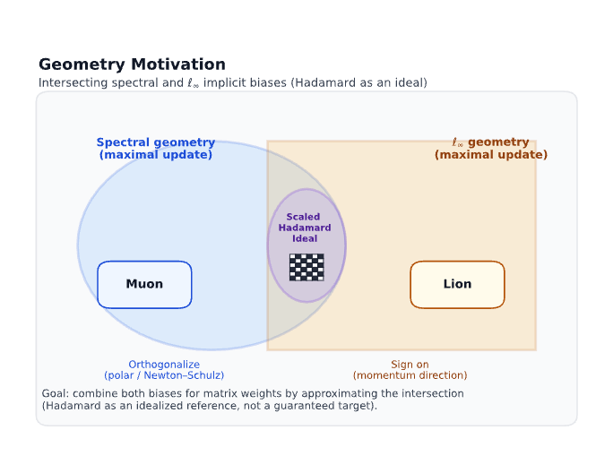
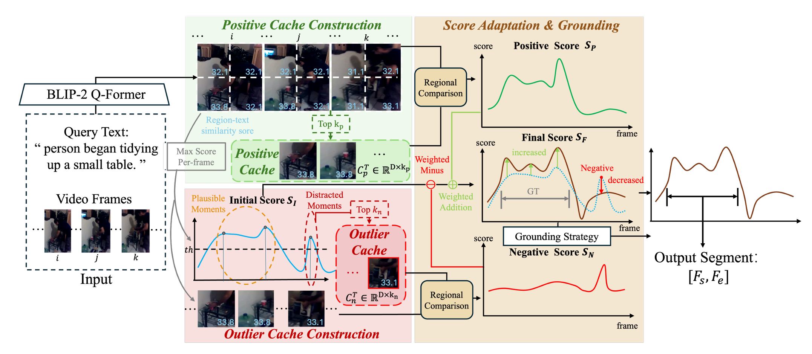
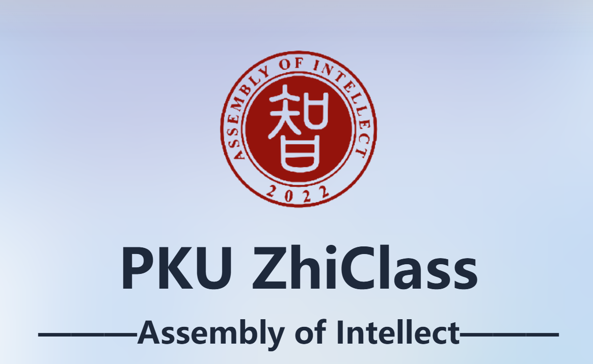

|
Zixiao Wang (王子骁) Hi there !I am Zixiao Wang, a third-year undergraduate student at Peking University, majoring in Artificial Intelligence in Zhi Class (an honors program directed by Prof. Baoquan Chen) at the School of Intelligence Science and Technology. Also, I am currently exchanging at School of Computer Science at Carnegie Mellon University. I am honored to be advised by Prof. Huishuai Zhang and Prof. Dongyan Zhao in Wangxuan Institute of Computer Technology. Previously, I also had the privilege to work with Prof. Yang Liu. My research focuses on Large Language Models, Optimization and Multimodal Learning. I am particularly interested in developing efficient and effective optimization algorithms for multiple training stages of large language models, as well as analyzing the theoretical properties behind the training process. Email / GitHub / Openreview / |
{kind=link}
News2025-7 Submitted Training-free Video Temporal Grounding Enhanced by Contextual Region Cue based Test-time Adaptation to AAAI 2026! 2026-1 Submitted OLion: Approaching the Hadamard Ideal by Intersecting Spectral and L inf Implicit Biases to ICML 2026! |
ResearchI'm interested in large language models, optimization algorithms, and multimodal learning. |
|

|
OLion: Approaching the Hadamard Ideal by Intersecting Spectral and L inf Implicit Biases
Zixiao Wang*, Yifei Shen*, Huishuai Zhang† When Muon meets Lion Preprint, 2026-1 Openreview We introduce OLion, a memory-efficient optimizer that combines spectral control from Muon-style orthogonalized updates with ℓ∞-style coordinate control from Lion-style sign updates. |
|

|
Training-free Video Temporal Grounding Enhanced by Contextual Region Cue based Test-time Adaptation
Jiayi Gao, Minghang Zheng, Zixiao Wang, Yuxin Peng†, Yang Liu† https://openreview.net/pdf?id=eIhP3pDpWx We present a novel training-free video-level adapter to enhance video temporal grounding by importing in-domain context andregion-wisevisual cues. |
Experience |

|
School of Computer Science, Carnegie Mellon University
2026.1 - present Visiting Student |
|
Wangxuan Institute of Computer Technology Web Information Processing Lab
2025.5 - present Research Intern |
|
|  |
Zhi Class, Peking University
2023.9 - present Undergraduate Student |
Honors & Awards
2023-24 Leo KoGuan Scholarship (100 students in Peking University per year) |
Miscellaneous |
||
|
||
|
|
"Per Aspera Ad Astra."
|
|
Website template from Jon Barron. |